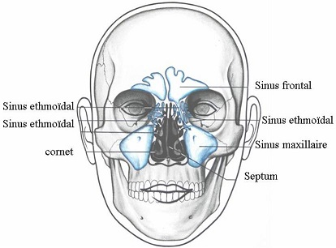

Les sinusites
DefinitionsLa sinusite
La sinusite est l'inflammation des sinus.
Les sinus
Les sinus sont des cavites creusees dans certains ose de la face qui sont annexees aux fosses nasales, il y a quatre types de sinus: sinus frontal, sinus maxillaire (de chaque cete), sinus ethmoedale (entre les yeux), sinus sphenoedal (creux du crene).

La sinusite aigue est l’inflammation aigue de la muqueuse sinusienne.
Elle s’observe au cours d’une rhinite aigue, d’une grippe, apres un bain.
Signes cliniques
Traitements
La sinusite chronique est l’inflammation chronique de la muqueuse sinusienne avec principalement une atteinte du sinus maxillaire.
Signes cliniques
Traitements
Voir aussi :
|
Accueil
| Sciences infirmieres |
Soins et techniques
|
Pharmacologie et Therapeutiques
|
Examens
biologiques |
Examens medicaux
| Version imprimable e Samir ISP tous droits reserves design : xgraphik.com modifie par M. Pitte |
 haut
de page
haut
de page